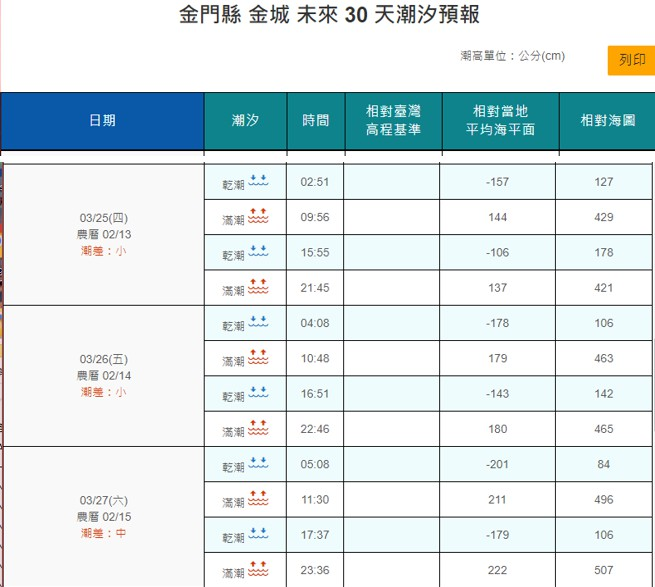

海產店
蛤拌麵、蛋炒蛋(魚蛋炒雞蛋)、炒沙蟲、炒螃蟹、高粱嗆蟹、炒魚肚、炒風螺、蒜頭魚、黃魚湯、炒花蛤、炒蛤蜊、(中高價位)
閩式燒餅、油條與雙胞胎
金沙店址：
閩式燒餅 (07:30~16:00 休四)
金城店址：
金一燒餅店 (05:30~12:00)
三寶齋燒餅(10:00~17:00 休三)
進麗小籠包(07:00~13:00、16:10~19:00)
炒泡麵與鍋貼
金湖店址：
成功鍋貼(11:30~14:00、17:30~20:00休二)
佑昇生億飲食店(10:00~14:00、17:00~20:00)
列嶼店址：
妙香小吃舖(10:00~18:00休三)
牛肉麵
金城店址：
良金牛肉麵(10:30~20:00)

EVER RICH 昇恆昌金湖廣場
金佳旺食品有限公司
三寶齋燒餅
順玉特產
馬家麵線
金瑞成貢糖八達樓店
協發行泡菜
金太武一條根本舖
陳金福號-100年貢糖功夫
【王大夫一條根】
【江南金酒特產店】

【玩轉金門】
地點：
資訊（位置）
金門縣文化局表示，亞洲旅遊台全新企劃節目《世界跟我這Young玩》，已在今年1月31日播出，金門部分將分集在3月21、28日及4月4日播出，在MOD、亞洲旅遊YouTube頻道、有線電視系統、凱擘、Litv、Fain TV都可以收看。希望透過主持人方馬丁《世界跟我這YOUNG玩》玩轉金門分享會，分享他眼中金門與瑞典的文化差異及旅遊中帶來的感動，歡迎有興趣的民眾可於3月26日（星期五）上午10時到金大理工大樓呂慶安演講廳免費聆聽。
3/26 10:30-11:30
豐富的自然生態，賞鳥水獺的聖地
金門位在南來北往的候鳥遷徒必經之地，自砲聲絕跡後，少受干擾的田間，春季小麥和夏秋高粱的收成、海灘潮間帶的魚蝦貝類，都為各種候鳥和留鳥提供了充足的食物，成為各種鳥類棲息的天堂，除了可見環頸雉、留鳥戴勝，以及夏日精靈栗喉蜂虎等蹤影之外，更可看見保育類動物水獺的蹤影，是欣賞自然生態的聖地。
金門位在南來北往的候鳥遷徒必經之地，自砲聲絕跡後，少受干擾的田間，春季小麥和夏秋高粱的收成、海灘潮間帶的魚蝦貝類，都為各種候鳥和留鳥提供了充足的食物，成為各種鳥類棲息的天堂，除了可見環頸雉、留鳥戴勝，以及夏日精靈栗喉蜂虎等蹤影之外，更可看見保育類動物水獺的蹤影，是欣賞自然生態的聖地。
水獺分布地圖
鳥類分布圖

在炎炎夏日來金門旅遊，賞鳥人士絕不能錯過夏日精靈──栗喉蜂虎！栗喉蜂虎屬於過境金門的夏侯鳥，每年4-8月都會到金門築巢繁殖，之後再飛往其他地區過冬。栗喉蜂虎色彩鮮艷奪目，以挖掘土洞為巢穴，是集體營巢的鳥類。為了讓遊客更加了解夏日精靈，及保護牠們的巢穴，在金門最大的巢地青年農莊，設置了迷彩偽裝隧道，提供近距離觀察且友善的空間。
金門潮汐

建功嶼登島潮汐
交通船票

烈嶼營區射擊體驗
體驗流程
→指定地點集合
→換裝(水彈槍、護目鏡、防彈背心)
→教練宣達安全事項
→開始對戰(體驗戰、奪旗戰、攻防戰、殲滅戰、解救人質戰)
體驗資訊
• 開放時間:每天固定場次13：30
• 體驗地點:：四維七集合
• 體驗時間:約2小時
• 人數:：6人成行，上限30人
• 洽詢電話:082-363113 /380元